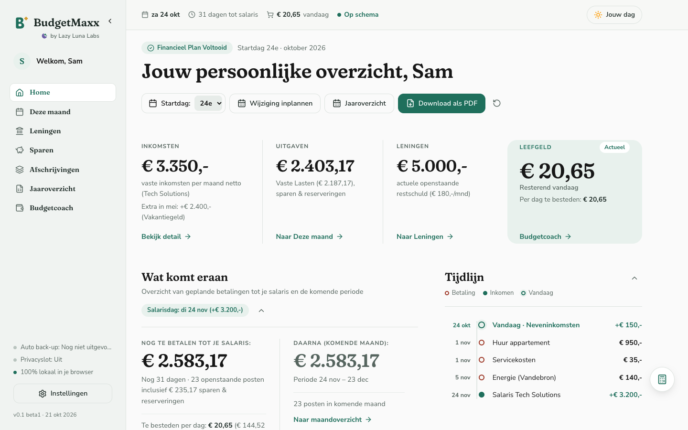
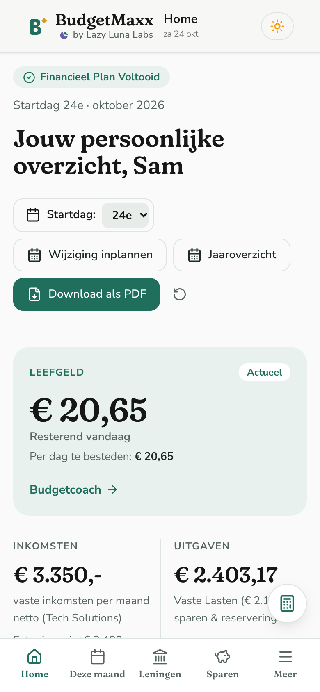
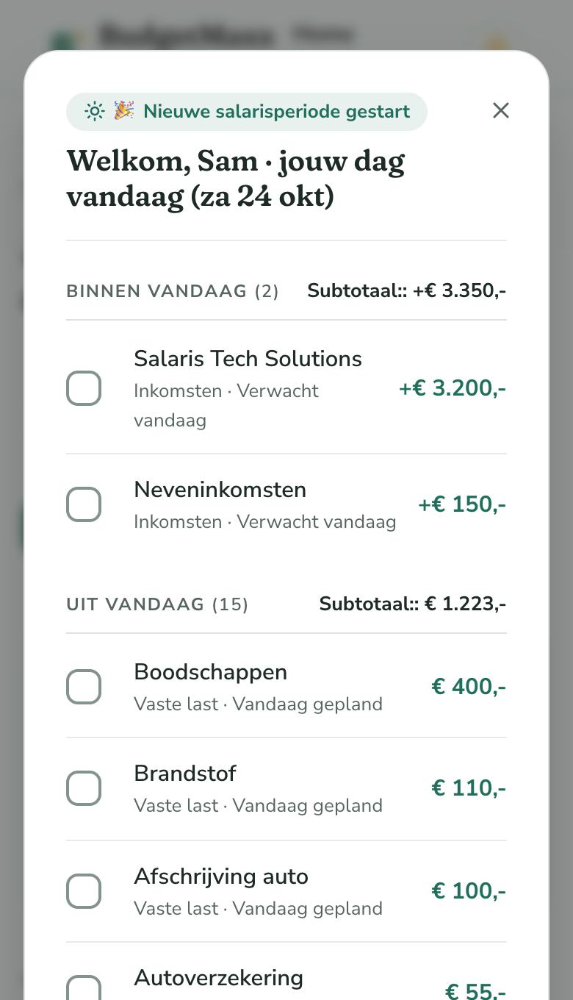
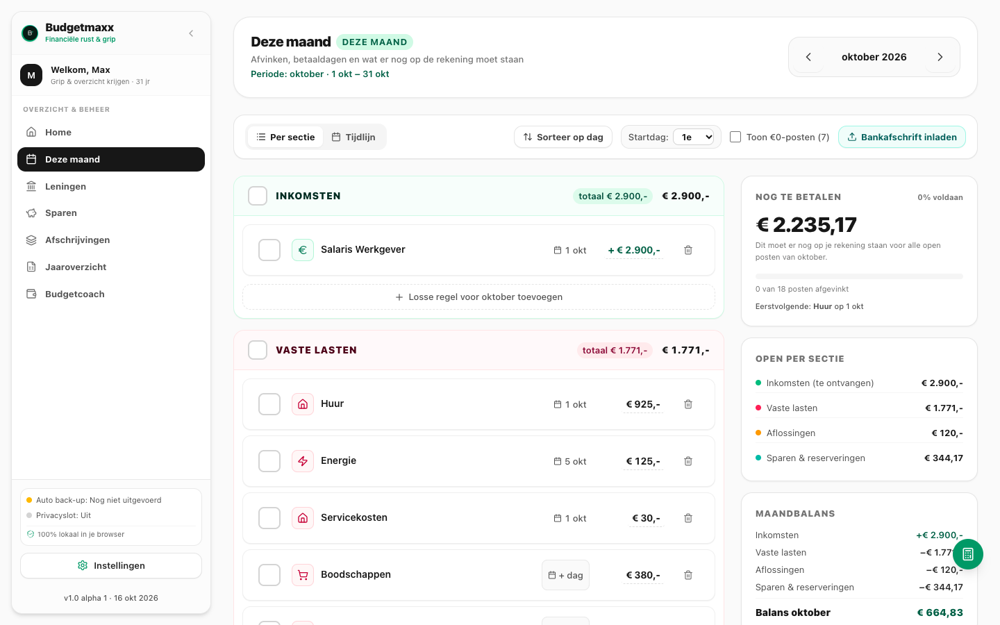
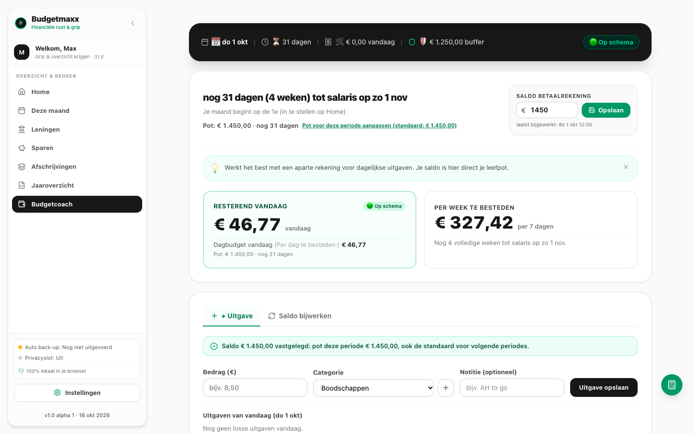
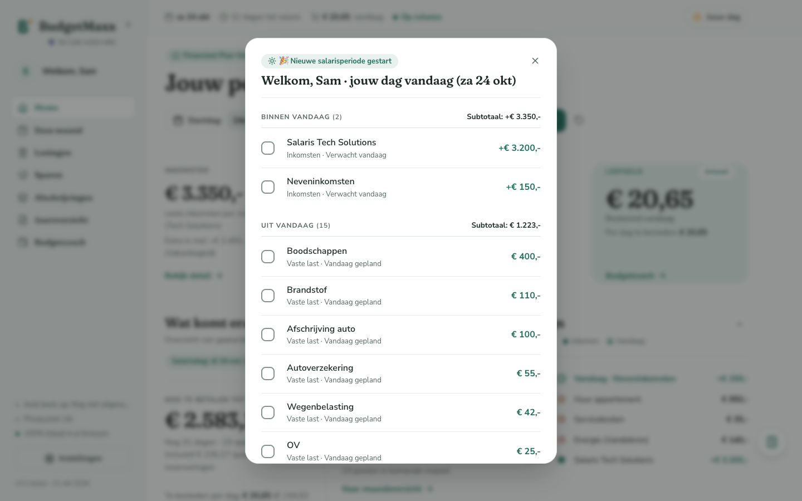
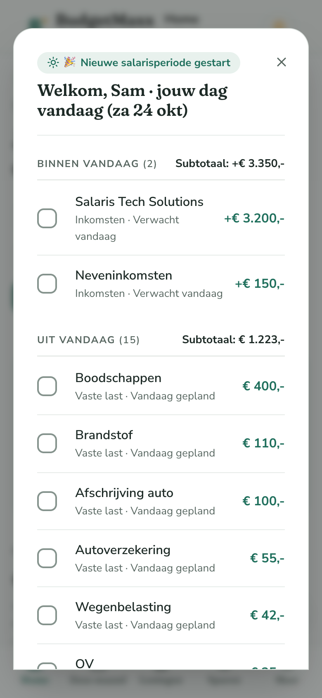
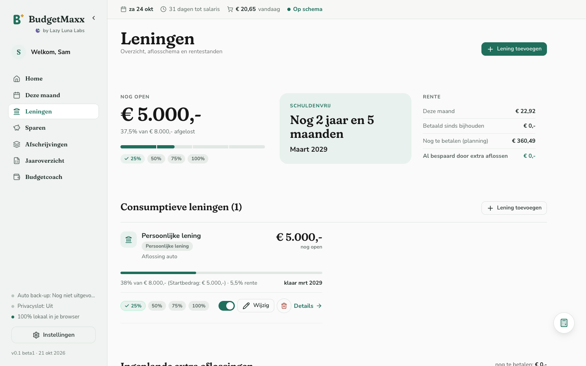
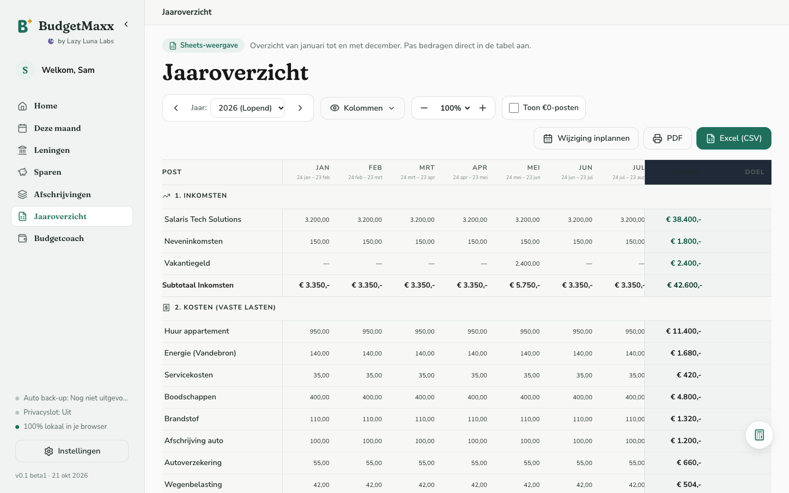

Home / Dashboard
Je hele maand in één oogopslag: inkomsten (€ 3.350,-), uitgaven, de openstaande lening en wat je vandaag nog mag besteden, plus een tijdlijn van de geplande betalingen.


BudgetMaxx maakt van jouw inkomen, vaste lasten en wensen een helder plan per salarisperiode. Zonder account, zonder cloud: je geld blijft op jouw computer.


Je bankapp laat zien wat je saldo is, maar niet wat je daarmee kunt. BudgetMaxx draait het om: een plan vooraf, in plaats van achteraf turven.
Een korte wizard: inkomen, vaste lasten, spaarpotten, leningen.
Het maandoverzicht volgt je salarisperiode. Vink af wat betaald is.
De Budgetcoach rekent een dagbudget uit je pot.
Zo ziet dat eruit voor demoprofiel Sam (verzonnen bedragen, uit de screenshots hieronder):
Per salarisperiode, met afvinken.
Zie waar je geld heen gaat en hoe het jaar eruitziet.
Inclusief extra aflossen.
Reserveringen voor wat eraan komt.
Een dagbudget uit een slinkende pot, met pop-up "Jouw dag".
Handig voor wie zelfstandig werkt.
Bewaar of print je maand.
Snel iets narekenen, zonder de app te verlaten.
Geen account. Geen cloud. Geen bankkoppeling.
BudgetMaxx is één HTML-bestand dat in je browser draait, ook zonder internet. Je gegevens staan lokaal op jouw computer en kunnen optioneel worden versleuteld. Deze pagina laadt zelf ook niets van buiten.
Je geld blijft thuis. Max ook.
Let op: omdat alles lokaal staat, maak je zelf back-ups. De app helpt je daarbij.
BudgetMaxx is gebouwd door Luna, met hulp van AI-agents. We winden er geen doekjes om.
De app zelf gebruikt geen AI en geen internet. Je gegevens gaan nergens heen.
Schermafbeeldingen met het fictieve demoprofiel "Sam". Alle bedragen zijn verzonnen. Scroll door de zes schermen, of klik een tab.
Je hele maand in één oogopslag: inkomsten (€ 3.350,-), uitgaven, de openstaande lening en wat je vandaag nog mag besteden, plus een tijdlijn van de geplande betalingen.


Per salarisperiode vink je af wat binnen is en wat betaald is. Sam ziet direct dat er nog € 2.583,17 op de rekening moet staan voor de open posten.

De Budgetcoach rekent een dagbudget uit je pot: € 20,65 resterend vandaag en € 144,52 per 7 dagen, tot het volgende salaris.

Een pop-up met wat er vandaag binnenkomt (€ 3.350,-) en wat eraf gaat (15 posten, samen € 1.223,-), met een knop om meteen af te vinken.


Een persoonlijke lening met € 5.000,- nog open, 5,5% rente en een verwachte einddatum: schuldenvrij in maart 2029. Met ruimte om extra af te lossen.

Het hele jaar als overzichtelijke tabel, met alle posten per maand. Bovenaan staan knoppen voor PDF en Excel (CSV).

BudgetMaxx is gratis, zonder abonnement, zonder Pro-versie en zonder reclame. De code is openbaar: iedereen kan meekijken.
Helpt Max je? Een donatie is welkom, maar nooit verplicht.
Nee. Er is geen account, en geen server waar jouw gegevens heen gaan.
Niets. BudgetMaxx is gratis. Wil je iets terugdoen, dan mag je doneren, maar dat hoeft niet.
Ja. De code is openbaar, zodat iedereen kan zien wat de app doet.
Nee. De app is gebouwd met hulp van AI-agents, maar de app zelf gebruikt geen AI en maakt geen verbinding met internet.
Op jouw eigen computer, in je browser. Ze gaan nergens heen. Je kunt ze optioneel versleutelen.
Ja. Het is één HTML-bestand dat offline werkt.
Maak regelmatig een back-up. Zonder back-up kunnen gegevens niet worden hersteld, omdat wij ze niet hebben.
Ja. Je zet de hele app op Engels in Instellingen, ook de PDF.
Nee. BudgetMaxx is een rekenhulp om overzicht te krijgen.
De beta is open: iedereen mag meedoen. Meld je hieronder aan en je krijgt direct een mail met uitleg: wat de beta is, de downloadlink, de starthandleiding en hoe je een fout meldt.
De aanmelding loopt via Google Forms. Lees eerst de privacyverklaring. De app zelf verstuurt nooit iets.
Lukt het formulier niet? Open het in een nieuw venster.